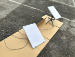
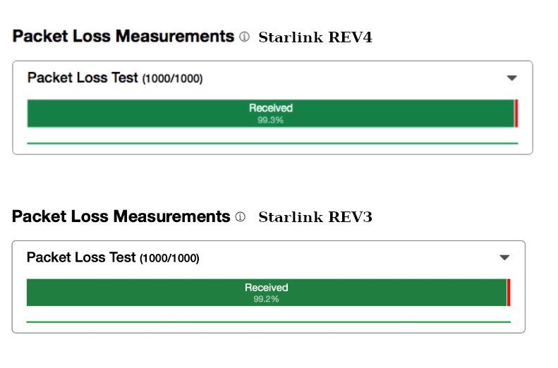

Revision 4 is the new version of the Starlink user terminal. As of February 2024, the new version is only available in the US.
I decided to test the new hardware and compare it to the well-known REV3 (a.k.a. Gen2/V2 or “Standard Actuated”).
Revision 4
If you don’t understand why this model is called REV4, I explain it in the unboxing video.
Here is my unboxing and initial review of the new Starlink user terminal:
Revision 3 and Revision 4 specifications
This is a comparison of basic specifications from the Starlink website.
{kind=link}
Breaking into
The IP rating is higher because the new housing is not ultrasonically welded anymore. It has a complex construction and is glued with an automotive-class sealant.
Unfortunately, this housing is quite hard to disassemble without partial destruction.
{kind=link}
At this moment, I have no idea how to seal it back. I’ll share more details on the teardown process in future posts.
Revision 4 PCB
The new Starlink terminal has a resigned PCB with all-new antenna electronics.
The next-gen Shiraz digital beamformers support more RF channels. There are only six beamformer ICs (rev3 has 16 chips). FEM elements are connected in a daisy chain and combined by groups. I didn’t do detailed reverse-engineering yet.
{kind=link}
SoC, RAM, and eMMC are the same as in REV3.
{kind=link}
The main difference is the PoE circuit. Now, it’s on a separate board. This PCB receives 48 PoE and steps it down to 12V and 3.3V. STM32 MCU controls PoE negotiation and board operation.
{kind=link}
I will not focus on further reverse engineering in this article. It’s just an overview.
REV4 vs REV3: basic tests
Location: Kyiv, Ukraine
Test date: 23 January 2024
Time: 4 p.m.
Starlinks firmware version: a8a61034-4207-4484-b8ea-4c4c01f07cde
Standard user setup with routers. No bypass mode.
Conditions: clear sky
Please watch my initial and basic tests below. I’m comparing startup time, power consumption, and network speed. Snow melt mode was disabled.
During these synthetic tests, the new REV4 performed better. The total power consumption of the REV4 terminal and the new REV3 router was under 100W. This meets the stated specifications. But without the snow melt mode. Please note this.
| Parameter | Starlink REV3 | Starlink REV4 |
|---|---|---|
| Download speed, Mbps | 199 | 307 |
| Upload speed, Mbps | 10 | 15 |
| Average ping, ms | 93 | 88 |
| Jitter, ms | 111.9 | 9.2 |
| Max power consumption, W | 55 | 100 |
I believe that most of the differences were caused by routers.
REV4 vs REV3: advanced tests
Location: Kyiv, Ukraine
Test date: 4 February 2024
Time: 3 p.m.
REV3 firmware version: a8a61034-4207-4484-b8ea-4c4c01f07cde.uterm.release
REV4 firmware version: c4718913-5c91-4cf2-b31a-45c187e4bca2.uterm_manifest.release
No routers were used.
Conditions: cloudy sky
During the second test, I used flent to run rrul to netperf-eu.bufferbloat.net and collected information about bandwidth and response fluctuations. Additionally, I ran a Cloudflare speed test. All tests were run separately for both Dishys, except one test where I ran the Cloudflare test simultaneously on both devices.
The video of the tests is currently editing.
During the tests, I used two GEN1 PoE bricks and two laptops with direct Ethernet connections.

Test command line: flent -p all_scaled -l 60 -H netperf-eu.bufferbloat.net -t "rrul_"$DISHY_NAME -o rrul_$DISHY_NAME.png
Results for REV3, single run:
{kind=link}
Results for REV4, single run:
{kind=link}
As you can see, it’s pretty good! The ping plot fluctuates around 100ms without any crazy jumps.
Additionally, REV3 2 TCP Streams upload and download vs. ping.
Test command for upload: flent tcp_2up -p totals -l 60 -H netperf-eu.bufferbloat.net -t "rrul_"$DISHY_NAME -o rrul_$DISHY_NAME.png
Test command for download: flent tcp_2down -p totals -l 60 -H netperf-eu.bufferbloat.net -t "rrul_"$DISHY_NAME -o rrul_$DISHY_NAME.png

Download the Flent file for 2 streams down.
Download the Flent file for 2 streams up.
REV4 2 TCP Streams upload and download vs. ping

Download the Flent file for 2 streams down.
Download the Flent file for 2 streams up.
I noticed a slight packet loss on both devices. That looks okay. For some reason, REV4 had a higher loss rate.
No more problems were noticed with either device.
{kind=link}
REV4 power consumption
I ran the new terminal with the Snowmelt mode ON and found this device very power-hungry. The consumption jumped way higher than I expected – 186W!
Note this if you consider running this device with an autonomous power supply.
{kind=link}
Additional tests for REV4
In a few days, I decided to run additional tests with the new terminal.
It was 2 a.m., curfew. I wasn’t able to visit my previous test site. So, I put the terminal outside my window and tested it with many obstructions.
It started snowing during testing, so I measured the power consumption again.
Location: Kyiv, Ukraine
Test date: 8-9 February 2024
Time: 2 a.m.
Firmware version: c4718913-5c91-4cf2-b31a-45c187e4bca2.uterm_manifest.release
Two modes were tested: the Gen3 router and the Gen3 router in bypass mode.
Conditions: cloudy sky, snow
The initial synthetic speed test showed some fantastic results despite not ideal conditions. This is the speed record so far!
{kind=link}
Power consumption during the test remained around 85W. Activation of the Snowmelt mode caused a crazy jump to 200W. It wasn’t a fluctuation, but stable consumption during the test time.
{kind=link}
This is even higher than the actual REV4 PSU advertised consumption (197W).
I ran rrul 5-minute tests in two modes: with the Gen3 router and the Gen3 router in bypass mode. There were interruptions during the tests.
Test command: flent rrul -p all_scaled --socket-stats -s 0.5 -l 300 -H netperf-eu.bufferbloat.net -t "rrul_"$DISHY_NAME -o rrul_$DISHY_NAME.png
Results for the first 5-minute run with the router in normal mode:
{kind=link}
Results for the first 5-minute run with the router in bypass mode:

Update. February 18, 2024

The new firmware 5776ed0f-38b5-47bf-8ff4-d38f7d2c326b.uterm_manifest.release performs slightly better in terms of latency and stability.
Download the flent file, 300 seconds test.
Download the flent file, 60 seconds test.
I haven’t reverse-engineered the new router yet. It looks like here we are dealing with the same software switch (Linux bridge) with all known problems.
On the other side. I noticed that the new antenna better picks up the signal in poor (snow and physical obstructions) conditions. This obviously makes it possible to achieve higher modulation rates.
Please look at the obstruction map during the last test.
{kind=link}
I also noticed that the obstacle map was built quite quickly. But perhaps this is simply the result of a software update.
There will be more materials on the new terminal, so stay tuned.
Thanks for reading.
Thank you for doing and sharing your tests.
Thanks Oleg, stay safe.
No change in GPS versus the V2?
The same STA8089 GNSS receiver, but the new PCB Patch antenna.
hi oleg.. first of all Uaaaauuuuuuuu i have been reading your posts regarding starlink disassemblies and i am loving it.. would it be possible to share the firmware dumps? or is there any site were wen can download the firmware.bin dumps to analyse with binwalk?
Sorry, I’m sharing firmware dumps.
Hiya great amazing stuff.. would love to check the firmwars, do you have any tools to get the OTA firmware updates? or are u simply dumping the Flash to read out the firmware?
You mention modulation rates, I was under the impression it was fixed at 64QAM.
Some really interesting findings.
Hi Oleg,
Thanks for this new article, super interesting!
Do you know if it’s possible to use any of the Starlink terminal generations, connect to an onboard controller (soldering cables or via the network outlet) and get technical information about visible starlink satellites?
For example, where are starlink satellites detected in the sky (via beacons – not TLEs), what frequencies are used, what is the SNR, etc…
Essentially, is it possible to turn the starlink antenna into a sort of spectrum analyzer to identify starlink satellites?
Thanks!
Hello,
Unfortunately, it’s impossible. All this information is hidden behind SoC fuses and is available only in factory mode or for the software running on the terminal.
Hello
I am in the UK and trying to figure out if I should wait for the Rev 4 to arrive here before buying. Not sure when it will get here. Is it worth the wait? Thank you!
Hi Oleg,
Great work as usual. Given all the hardware changes in the rev4, I was curious to know if the same firmware version could run on both rev4 and older revs or did you have to load different ones? Thanks!
Hi Ben,
All Starlink terminal runs the same firmware.
There are just different configurations and some code switches inside the firmware. Like “if rev3 – do this, else if rev4 – do something else”
Hi Oleg,
I was doing some preliminary research while building my new Expedition Vehicle, and stumbled over your blog – Good job and thanks for your work!
Just a simple question: Are there any reasons why the new Rev.4 antenna could not be operated directly with a 48V PoE, hence completely deleting the provided router?
Thanks and regards,
Marcel
Hi Marcel,
In my tests, I used PoE injectors from the REV1 Starlink terminal. So, no routers.
You can use any high power Starlink-graded PoE injector like this one: https://www.amazon.com/dp/B0CSBYJLPV?ref=emc_s_m_5_i_atc
Excellent! Thanks much for the quick reply!
Hi,
What PoE did you use and is the ethernet wiring still proprietary ? I have two different 320w Poe for the high performance starlinks with the funky ethernet adapter on 2 vehicles and wanted to test this one is using the PoE rather than plugging the new brick into the inverter
Stay safe
Christian
I am using one of these in one vehicle with high performance flat:
https://a.co/d/hx31W6i
and the other one is using this one (no need to cut cable)
https://a.co/d/hx31W6i